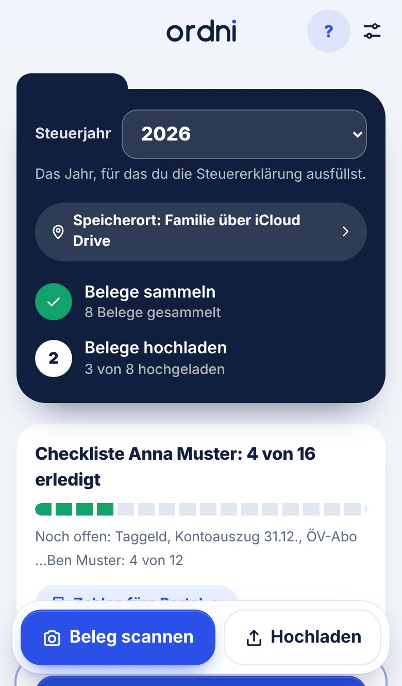
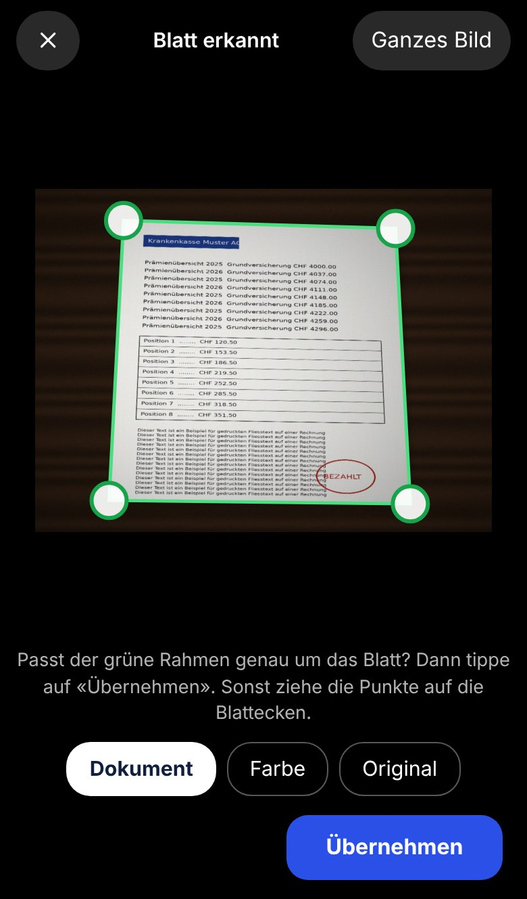

Eine Checkliste für jede Person
Neun Fragen, und jede Person im Haushalt sieht, welche Belege sie braucht: Lohnausweis, Säule 3a, Hypothek, Unterhalt und mehr. Das ist eine allgemeine Orientierung, keine Steuerberatung.
Ordni ist der Steuerordner für die Familie: Belege mit dem Handy scannen, in Ordnern ablegen und gemeinsam sammeln.
Die ersten 30 Tester nutzen Ordni gratis für die Steuerjahre 2026 und 2027. Läuft im Browser, ohne Konto, und lässt sich auf den Home-Bildschirm legen. Ordni ist in der Testphase.

Beispieldaten
Die Steuererklärung steht an, und die Belege liegen überall: im Briefkasten, im Postfach, in der Fotogalerie. Ordni sammelt sie das ganze Jahr an einem Ort.

Lege das Blatt auf den Tisch. Ordni erkennt die Ränder und schneidet es zu. Passt etwas nicht, ziehst du die Ecken zurecht oder bearbeitest die Seite später nochmals.
Die App schlägt den Namen vor, zum Beispiel «Krankenkasse 2026 – Anna Muster». Elf Ordner für die typischen Themen sind schon angelegt.
Die Checkliste zeigt, was noch fehlt. «Zahlen fürs Portal» listet alle Beträge auf einer Seite, als PDF zum Sichern. Für den Upload gibt es PDFs oder ein ZIP-Paket.
Alle Bilder zeigen erfundene Beispieldaten.
Neun Fragen, und jede Person im Haushalt sieht, welche Belege sie braucht: Lohnausweis, Säule 3a, Hypothek, Unterhalt und mehr. Das ist eine allgemeine Orientierung, keine Steuerberatung.
Alle legen ihre Belege ab. Der Abgleich läuft über einen Ordner in iCloud Drive, Google Drive, OneDrive oder einem anderen Dienst, den ihr selbst teilt. Es gibt kein Ordni-Konto. Auf dem Computer mit Chrome läuft er von selbst, auf dem iPhone sind es ein paar Tipps.
Mit einem Passwort sind die Dateien im gemeinsamen Ordner verschlüsselt (AES-256). Das Passwort bleibt bei euch.
Falsch zugeschnitten oder der falsche Filter? Du öffnest das Originalfoto nochmals, setzt die Ecken neu und wählst Dokument, Farbe oder Original. Das Original bleibt auf deinem Gerät.
Gelöschte Belege liegen 30 Tage im Papierkorb. Ordni erinnert dich ans Sichern und meldet, wenn der Speicher knapp wird.
Trage bei jedem Beleg den Betrag ein. Ordni zeigt dir alle Zahlen nach Person und Ordner auf einer Seite und macht daraus ein PDF zum Sichern, zum Abtippen im Steuerportal.
Ordni läuft im Browser und lässt sich auf den Home-Bildschirm legen. Ein App-Store-Konto brauchst du nicht.
Wir suchen 30 Haushalte in der Schweiz, die Ordni für ihre nächste Steuererklärung ausprobieren. Du bekommst die volle App, gratis für die Steuerjahre 2026 und 2027. Dafür wünschen wir uns ehrliche Rückmeldung.
Das Angebot gilt für die ersten 30 Tester. Es zählt das Steuerjahr, nicht das Datum. Der spätere Preis steht noch nicht fest.
Steuerbelege enthalten Lohn, Vermögen und Familienverhältnisse. Darum liegen sie bei Ordni auf deinem Gerät und nicht auf unserem Server.
Ordni ist für Familien und Paare gedacht, die ihre Belege nicht jedes Jahr neu zusammensuchen wollen. Die Checkliste und die Ordner gelten für die typischen Belegarten.
Welche Unterlagen dein Kanton genau verlangt, steht in der Wegleitung deines Kantons. Ordni ersetzt weder diese noch eine Steuerberatung und füllt keine Steuererklärung aus.
Nein. Du öffnest Ordni im Browser und legst los. Es gibt keine Anmeldung.
Auf deinem Gerät, im Speicher deines Browsers bzw. der installierten App. Sichere sie ab und zu: «Jetzt sichern» in Ordni schreibt eine Sicherungsdatei in deinen Cloud-Ordner. Ordni erinnert dich daran.
Ihr teilt einen Ordner in iCloud Drive, Google Drive oder einem anderen Dienst. Jedes Handy schreibt seine eigene Datei dort hinein und liest die der anderen. Mit einem Passwort sind diese Dateien verschlüsselt. Auf dem Computer mit Chrome läuft der Abgleich von selbst, auf dem iPhone brauchst du ein paar Tipps, weil Apple Web-Apps das Schreiben in die Dateien-App nicht erlaubt.
Noch nicht. Du installierst Ordni direkt aus dem Browser: auf dem iPhone in Safari über «Zum Home-Bildschirm», auf Android in Chrome.
Nein. Ordni sammelt und ordnet deine Belege und zeigt dir die Zahlen. Eintragen und einreichen machst du selbst im Steuerportal deines Kantons.
Die ersten 30 Tester nutzen Ordni gratis für die Steuerjahre 2026 und 2027. Danach gilt ein Jahrespreis, den wir vor dem Start bekannt geben.
Noch nicht. Ordni gibt es zurzeit auf Deutsch.
Das Ausprobieren dauert eine Minute. Fragen oder Ideen? Schreib uns auf Instagram.